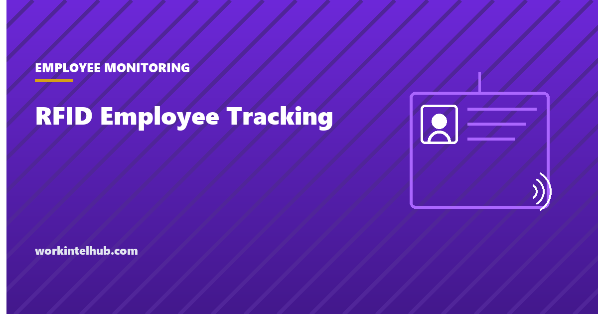

RFID Employee Tracking

Almost every organisation with a door already runs an employee tracking system. A badge reader records who went where and when, and the data sits in a log whether or not anyone decided to collect it.
The question that matters is not whether to have badges. It is where access control ends and movement tracking begins, and one legal distinction that decides how expensive a mistake can be.
What the system actually holds
More than most employers realise, and less than employees usually fear.
| Recorded | Typically retained | Reveals |
|---|---|---|
| Badge ID, door, timestamp | Months to years by default | Arrival, departure, which areas |
| Failed and denied reads | Same | Attempted access outside permissions |
| Reader location | Same | Movement between zones, if readers are internal |
| Anti-passback state | Session | Whether someone is currently on site |
The default retention is the part worth checking today. Access control systems are usually specified by facilities for security reasons and left on whatever the manufacturer shipped, which is often years. That is a movement history nobody decided to keep.
The other thing to check is how many readers are internal. Perimeter readers answer a security question. Readers on every internal door answer a different question, and once the data exists somebody will eventually ask it.
An RFID badge is not a biometric, and the distinction is expensive
This is the point most coverage of employee tracking gets wrong, and getting it right is worth real money in Illinois.
740 ILCS 14/10 defines a biometric identifier as a retina or iris scan, fingerprint, voiceprint, or scan of hand or face geometry. That is the complete list. A proximity card, a fob and a phone-based credential are none of those things: they identify a token the person carries, not the person.
So a plain RFID badge system does not engage the Biometric Information Privacy Act. A fingerprint or hand-geometry time clock does, and it brings with it a written notice and written release requirement before collection, plus a private right of action, which is what makes Illinois different from everywhere else.
The trap is the upgrade. Access systems are routinely extended with fingerprint or face readers for higher-security areas, and the BIPA obligations attach at that moment rather than at the original installation. Our page on the Illinois Right to Privacy in the Workplace Act covers BIPA in full, including the 2024 damages amendment that the Seventh Circuit held applies retroactively in May 2026.
Texas and Washington also regulate biometric collection, and several states now require notice of electronic monitoring generally. Badge data is not biometric, but in Maine it is squarely within the definition of employer surveillance, since 26 M.R.S. section 620-A covers monitoring through an electronic device or system without limiting it to a named list of channels.
Where access control becomes tracking
The same hardware supports both. What separates them is the question being asked of the data.
| Access control | Movement tracking |
|---|---|
| Is this person allowed through this door | Where has this person been today |
| Who was in the building during the incident | Who takes the longest breaks |
| Is anyone still on site in an evacuation | Who arrives latest on Mondays |
| Queried after an event | Queried routinely, or reported automatically |
The right hand column is not unlawful in most places. It is simply a different system with different consequences, deployed without anyone deciding to deploy it, and it is where badge data damages trust: people accepted a lock, not a timesheet.
The workable rule is that badge data answers questions about places and events rather than about individuals over time. Who was in the server room on Tuesday night is a security question. A weekly report of each person's first and last read is an attendance system built out of a lock, and if you want one of those you should say so.
Using badge reads for pay
Badge times are frequently repurposed as clock-in and clock-out. That is lawful and it introduces two specific problems.
The badge is not the shift. The read happens at the door, and the work starts at the desk, the bench or after changing. Where the gap is meaningful and the activity is required, that time is generally compensable, and a system that pays from badge-in to badge-out may be underpaying or overpaying depending on which direction the gap runs.
Rounding still applies. If the system rounds badge times to a quarter hour, 29 CFR 785.48 applies exactly as it does to a paper card: the rounding must run both directions and must not, over time, fail to compensate people for hours actually worked. Access systems are not designed with that rule in mind, so check which way the default rounds.
The record keeping duty in 29 CFR 516.2 does not move either. Whatever produces the times, the employer keeps hours worked each day and each workweek. Our timesheet guidance covers what has to be retained and for how long.
What people object to, and what they do not
Badge systems are unusual in employee monitoring because almost nobody objects to the badge. People object to three specific things, and each has a cheap answer.
Discovering a second use. A badge accepted as a door key being used to compile attendance is the complaint, not the door key. Saying at the outset that times may feed payroll costs nothing and removes the objection entirely.
Internal readers. A perimeter reader answers whether someone is on site. A reader on the door of every department answers where they spent the day. If internal readers exist for genuine security reasons, say which areas and why.
Not being able to see their own record. This is the one that turns unease into suspicion. A person who can look up their own badge history treats the system as infrastructure; a person who cannot treats it as something being done to them.
None of the three is about the technology. They are all about whether the use was disclosed before it started, which is the same finding as everywhere else in monitoring and the reason the policy comes before the install.
Deploying it without the trust cost
- Set retention deliberately. Ninety days covers nearly every security investigation. Years of movement history is a liability with no matching benefit.
- Say what it is for, in writing. Security, safety and evacuation. If it will also feed payroll, say that too, because discovering it later is the thing people object to.
- Name who can query it, and separate the security role from the management role. The person who can pull movement history should not be the person deciding promotions.
- Do not run routine reports on individuals. Query on events, not on people.
- Give people their own record on request. This costs nothing and changes how the system is received more than any policy sentence.
- Re-check before any biometric upgrade. The obligations change the day the reader changes.
Our monitoring acknowledgement form has notice wording that covers physical access data, and the ethical playbook covers the tests to apply before extending the system.
Key takeaways
- An RFID badge is not a biometric under Illinois law. The BIPA list is retina or iris, fingerprint, voiceprint, and hand or face geometry.
- A fingerprint or hand-geometry reader does engage BIPA, with written notice and release required before collection and a private right of action attached.
- The obligations attach at the upgrade, not the original installation, which is where employers get caught.
- Access systems usually ship with default retention measured in years. That is a movement history nobody chose to keep.
- Badge data should answer questions about places and events, not about individuals over time.
- Badge-in is not shift start. Paying strictly from door reads can misstate hours in either direction.
- If badge times feed payroll, the rounding rule applies exactly as it does to a paper time card.
- Nobody objects to the badge. They object to an undisclosed second use, internal readers, and not being able to see their own record.
Frequently asked questions
Is RFID employee tracking legal?
Badge-based access control is lawful across the United States. The constraints come from how the data is used rather than from collecting it: several states require notice of electronic monitoring, some protect off-duty conduct, and using badge times for pay brings the wage and hour rules with it.
Is an RFID badge a biometric under Illinois BIPA?
No. 740 ILCS 14/10 defines a biometric identifier as a retina or iris scan, fingerprint, voiceprint, or scan of hand or face geometry. A proximity card or fob identifies a token the person carries rather than the person, so it falls outside that list. A fingerprint or hand-geometry reader is inside it.
When does a badge system trigger BIPA obligations?
At the point a biometric reader is introduced, not at the original installation. Adding fingerprint or face readers to an existing access system creates a duty to give written notice and obtain a written release before collection, and BIPA carries a private right of action, which is what makes the exposure unusual.
How long should badge access logs be kept?
Ninety days covers nearly every legitimate security investigation. Access control systems commonly ship with retention set to years, which produces a detailed movement history that nobody decided to collect and that has to be disclosed or produced if it is ever sought.
Can badge times be used as clock-in and clock-out?
Yes, with two cautions. The badge read happens at the door rather than where work begins, and where the gap involves required activity that time is generally compensable. And if the system rounds, the rounding must run both directions and come out even over time, which access systems are not designed with in mind.
What is the difference between access control and employee tracking?
The question being asked. Who was in the building during an incident is access control. A routine report of each person's first and last read is an attendance system built out of a lock. The same hardware supports both, and the second one tends to arrive without anyone deciding to deploy it.
Why do employees object to badge systems?
Rarely to the badge itself. The objections are discovering a second use nobody mentioned, readers on internal doors that track movement rather than entry, and not being able to look up their own record. All three are answered by disclosing the uses before the system starts.
Should employees be told about badge tracking?
Yes, and it costs nothing. Four states now require written notice of electronic monitoring, and Maine's definition covers monitoring through an electronic device or system generally rather than a named list of channels. Beyond compliance, the objection people raise is almost always about discovering a use they were not told about.